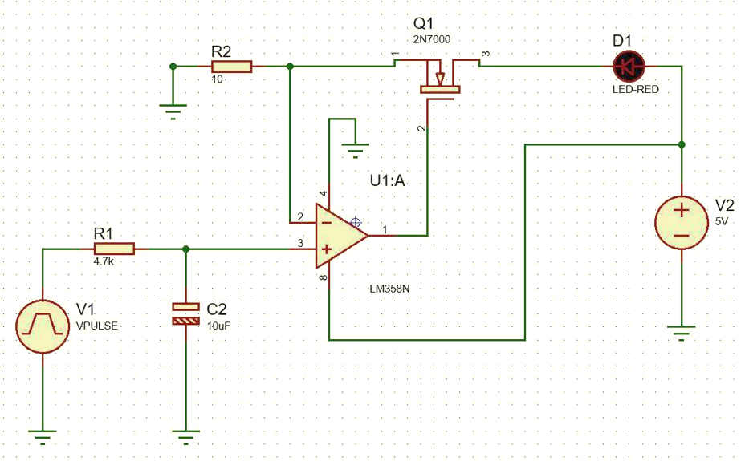
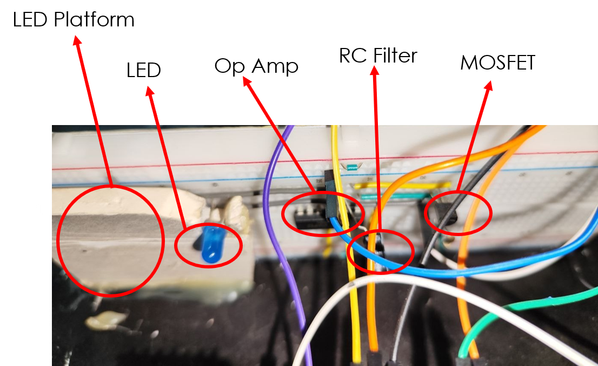
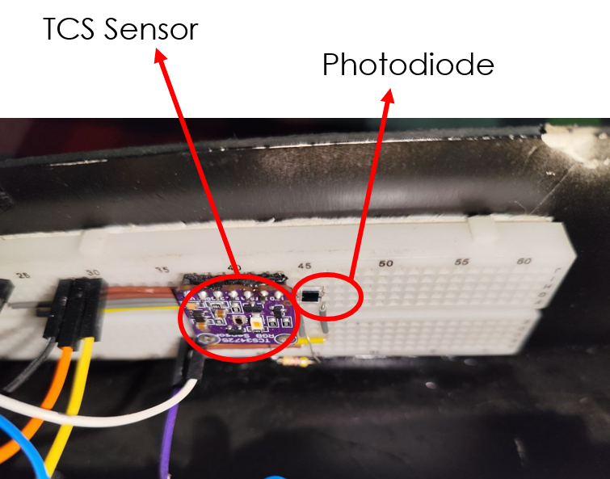
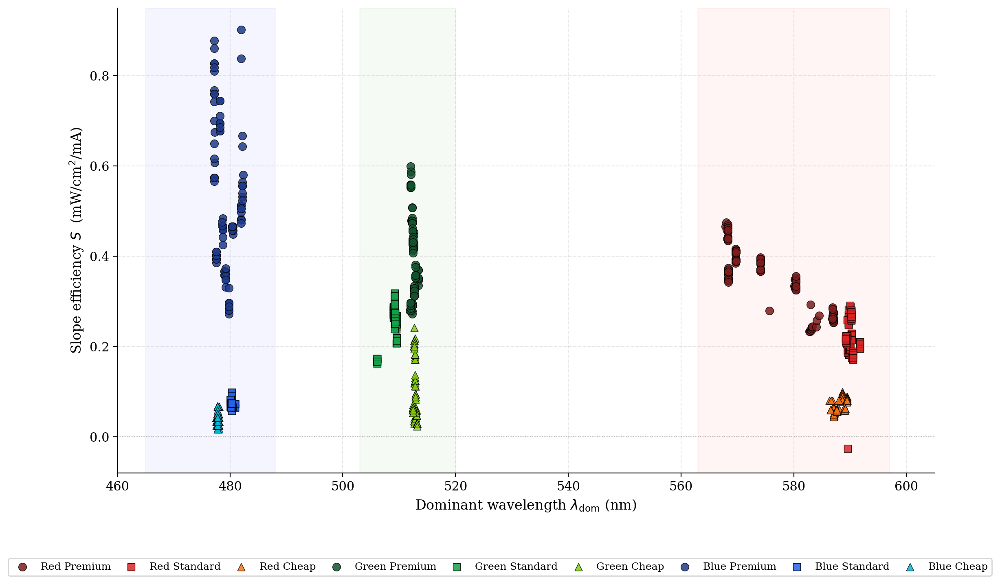
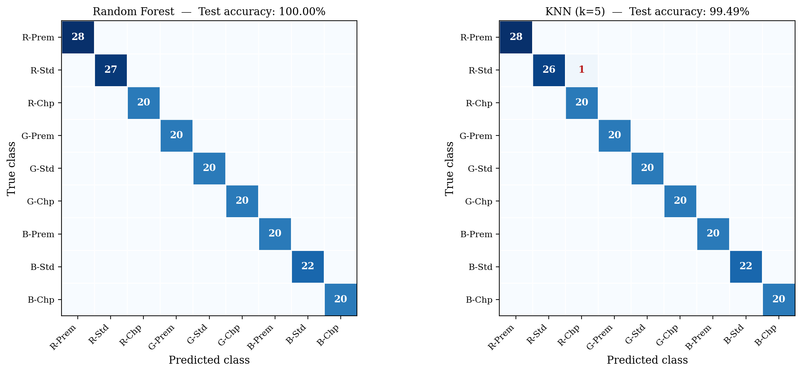
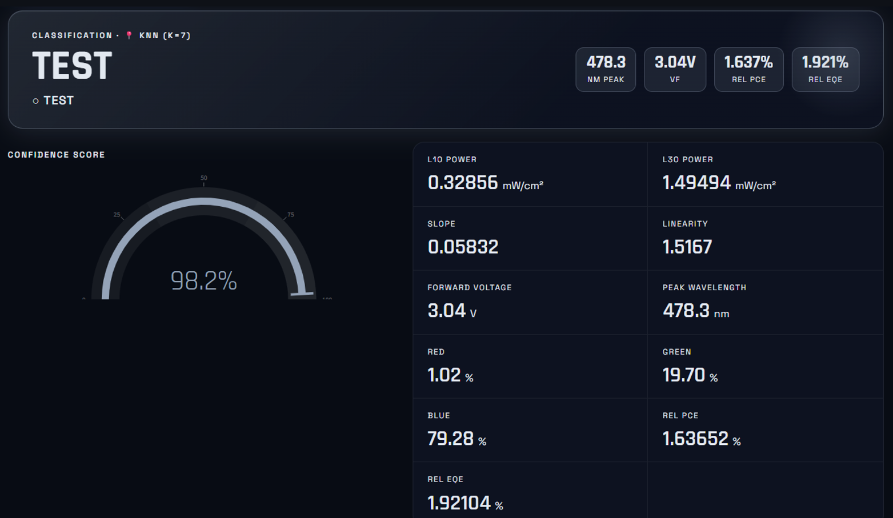

Instrumentation & ML · 2026
A low-cost tester (about 50 USD) that grades LEDs into nine colour and quality classes
A closed-loop constant-current driver, a BPW34 photodiode and a TCS34725 colour sensor feed a Python pipeline that turns raw counts into eleven physical features, which simple classifiers then use to sort LEDs by colour and quality tier.






| Class | Slope S (mW/cm²/mA) | λdom (nm) | PCE rel (%) |
|---|---|---|---|
| Red Premium | 0.355 | 575.3 | 16.27 |
| Red Standard | 0.219 | 590.1 | 10.53 |
| Red Cheap | 0.073 | 588.3 | 3.46 |
| Green Premium | 0.395 | 512.5 | 14.92 |
| Green Standard | 0.257 | 509.0 | 9.84 |
| Green Cheap | 0.089 | 512.8 | 3.01 |
| Blue Premium | 0.523 | 479.2 | 17.91 |
| Blue Standard | 0.073 | 480.3 | 2.28 |
| Blue Cheap | 0.040 | 477.8 | 1.07 |
This shows feature separability, not field readiness. The train-test split is by measurement, so the same physical LED appears in both sets, and there are only about 75 to 90 devices measured under controlled conditions. LED-grouped cross-validation is the natural next test.